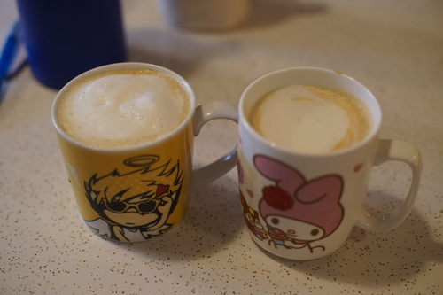
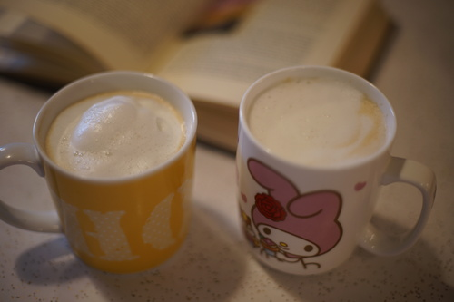
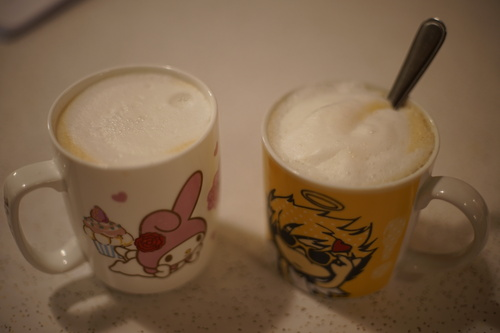
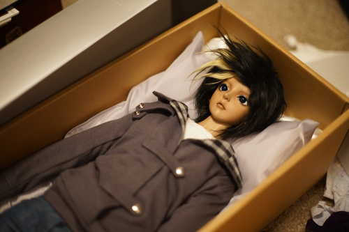
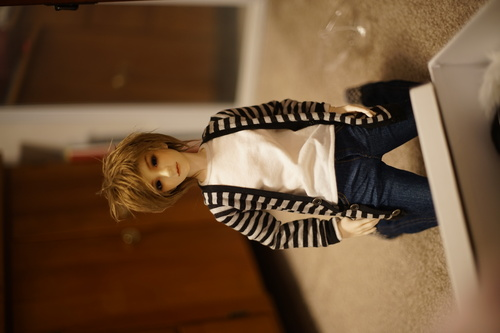
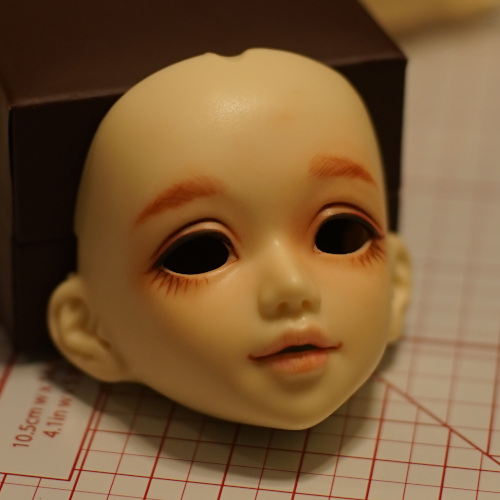

the thanksgiving challenge is where you drink as many lattes as you can on thanksgiving. makoto, ryan, and I all made it to 4 lattes each last year. it was miserable. this year, ryan and i managed 3 each.
10:23 AM
2:07 PM
6:20 PM. I hope I can sleep tonight.
i did the math on how much it costs me to make a latte and it came out to about 55 cents! so affordable!
i got a free turkey at winco and decided i needed the 20 lb monster turkey which leaked all over my fridge! it avoided my meat drawer that it was above and somehow leaked into my veggie drawer on the opposite side of the fridge. f*ck turkeys im never making one again.
anyway i rubbed it with tony charonies and threw it in and then played with my dolls for a few hours. turned out fine
poor rio. he's so disproportionate. i tried 7-8 wigs on him today. he fit in most of them. he does not belong anywhere near a 70 cm body. who the h*ck decided that. i still cant figure out why i bought him but im still pretty attached since i consider him my first doll. ryan saw him for the first time today. said he was a goblin. i cant even be mad.
i pulled out the first outfit i made for rio and i thought "oh! these are actually really good for a first try!" and then i put the pants on him and they did not fit at all! i spoke too soon!! he's back in the dumb nine9 inception jeans again. like seriously why did i buy those haha
i put my unoa's 12mm eyes in liam and im actually liking the size a lot better on him. not that you can see in my photo for ants. anyway he's so cool *_* i love this guy. the faux fur wig is my favorite on him but its too big for him and always falls off.
in addition to looking at chicabi, ive also been checking out comibaby. again their dolls are super super cute but they are a chinese company and i know i wont get an honest answer when i ask about their quality in the english community. everyones so careful to not hurt other's feelings that the truth is hard to find. like i knew mirodoll was bad before i was given one but i had NO IDEA how bad they truly were.
i decided to just wipe my lusis and sist faceplates instead of finishing them so i could paint the next day. i somehow managed to stain lusis, but it's just light browns around her eyes so i'll live. maybe i didnt spray enough base layers idk. anyway it snowed the next morning so i havent been able to paint yet. here's a picture of the staining faceup though! its only gouache but it stained the sealant too so it looks like pastels were involved
i ripped a bunch of CDs with error correction off and i am so mad at myself because a bunch of tracks are skipping so i need to rip them again.